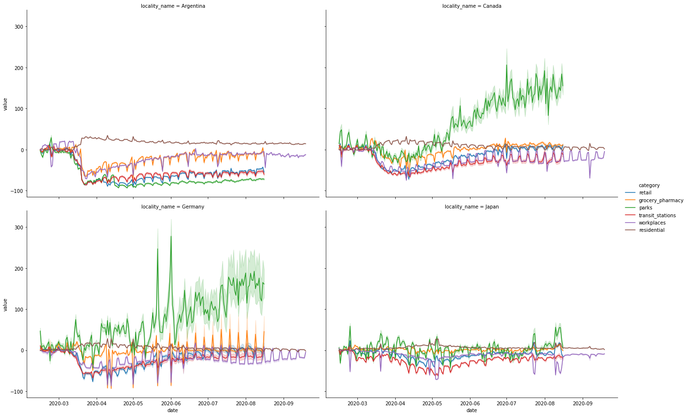

Using searborn and matplotlib to make great plobs isn’t easy. I have been looking on the internet for complete tutorials about how to setup a good plot, but I only found small peaces of code. So now I want to show a few tips to plot data using the Google Global Mobility Report and matplotlib.
You can run the code using colab, find the complete tutorial here. But now, let’s start import all libaries that we need.
import matplotlib.pyplot as plt
import pandas as pd
import seaborn as sns
Now we can read the data:
google_mobility_url = (
"https://www.gstatic.com/covid19/mobility/Global_Mobility_Report.csv?"
)
dt_original = pd.read_csv(google_mobility_url, low_memory=False, parse_dates=["date"])
I’m going to rename a few columns and select a group of countries to plot the data.
column_names = {
"retail_and_recreation_percent_change_from_baseline": "retail",
"grocery_and_pharmacy_percent_change_from_baseline": "grocery_pharmacy",
"parks_percent_change_from_baseline": "parks",
"transit_stations_percent_change_from_baseline": "transit_stations",
"workplaces_percent_change_from_baseline": "workplaces",
"residential_percent_change_from_baseline": "residential",
"country_region": "locality_name"
}
data = dt_original.rename(columns=column_names)
# filter the data and drop unnecessary columns
regions = ["Japan", "Canada", "Germany", "Argentina"]
columns_to_drop = ["census_fips_code", "metro_area", "iso_3166_2_code", "sub_region_1", "sub_region_2", "country_region_code"]
data = data.query(f"locality_name in {regions}").drop(columns=columns_to_drop)
We have the data that we need, now we can build a simple plot to show the values of all categories over time.
# first we melt the dataframe, to transform some column in rows.
long_data = data.melt(id_vars=["locality_name", "date"], var_name="category", value_name="value")
long_regions_plot = sns.relplot(
x="date",
y="value",
hue="category",
data = long_data,
col="locality_name",
col_wrap=2,
kind="line",
height=6,
legend="brief",
aspect=1.5,
markers=True,
dashes=True
)

Looks good! But I can’t read the title, the legend is small so the axis too.
import matplotlib.dates as mdates
# you can set the style to be one of white, dark, whitegrid, darkgrid, ticks
sns.set_style('darkgrid', {'legend.frameon': True})
# lets melt the data to plot
id_vars = ["country_region_code", "locality_name", "date"]
data_to_plot = data.melt(
id_vars,
var_name="category",
value_name="value"
).query('locality_name=="Argentina"')
long_regions_plot = sns.relplot(
x="date",
y="value",
hue="category",
data = data_to_plot,
col="locality_name",
col_wrap=2,
kind="line",
height=6,
legend="brief",
aspect=1.5,
markers=True,
dashes=True
)
long_regions_plot._legend.remove()
# Iterate thorugh each axis
for ax in long_regions_plot.axes:
ax.set(xlabel='Date', ylabel='')
handles, labels = ax.get_legend_handles_labels()
if handles:
set_labels = ['Retail & Recreation', 'Grocery & Pharmacy', 'Parks', 'Transit Stations', 'Workplaces']
ax.legend(handles=handles[1:], labels=set_labels, title="", fontsize=11, title_fontsize=11)
# Make x and y-axis labels slightly larger
ax.set_xlabel(ax.get_xlabel(), fontsize=14)
ax.set_ylabel(ax.get_ylabel(), fontsize=14)
# Make title more human-readable and larger
if ax.get_title():
final_txt = ax.get_title().split('=')[1].strip().capitalize()
ax.set_title(final_txt, fontsize=20)
#set ticks every week
ax.xaxis.set_major_locator(mdates.WeekdayLocator())
#set major ticks format
ax.xaxis.set_major_formatter(mdates.DateFormatter('%b'))
ax.xaxis.set_major_locator(mdates.WeekdayLocator(interval=5))
# now I want to show line for restriction date and easy restriction date
from datetime import datetime
restriction_date = datetime.strptime('2020-02-23', '%Y-%m-%d')
ease_restriction_date = datetime.strptime("2020-05-11", '%Y-%m-%d')
plt.axvline(restriction_date, color='k', linestyle='dashed', linewidth=1)
plt.axvline(ease_restriction_date, color='k', linestyle='dashed', linewidth=1)
# tick label size
plt.tick_params(axis='both',labelsize=13)
# set a range for y axis
axes = plt.gca()
axes.set_ylim([-120, 220])